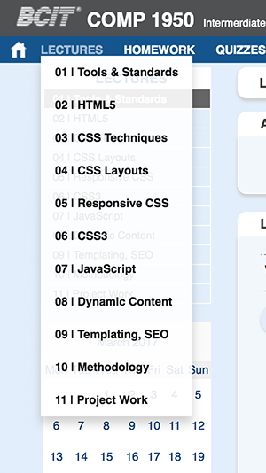

Rationale
This is where you describe why you chose to build the site in the way you have proposed. List all the deliverables you have implemented, and and any features or improvements you have added. Justify your decisions for choosing a particular layout and design. If you used advanced technology such as jQuery or CSS3, mention where it is being used, and why. Also List any features you had planned to implement but could not complete. If your rationale does not decribe a sufficient quantity of improvements, and if it does not effectively make a case for how these changes improve the site, your client will not be conviced that your team is the best choice.
- 4 protosite pages
- Home
We chose a relatively clean and simple layout. The focus of a course website should be the content. The blue and grey theme aligns well with BCIT's colours. This provides a seamless transition between the BCIT website and the COMP 1950 site.
 The main navigation bar includes links to Home, Lectures, Homework and Quizzes. We feel that these are the most important pages on a course website. We felt that with the current COMP 1950 page the homework section was difficult to find due to it being at the very bottom of each week's lecture. The top navigation also features a CSS3 drop-down menu on hover as this would lessen the amount of clicks one has to in order to reach the desired page.
A monthly calender is included using a jQuery plugin. It can be used to highlight important dates such as when homework is due or when there is a quiz. This can help students orient themselves to which homework is due when quickly.
Another issue that students encounter on the current COMP 1950 is while scrolling to the bottom of lecture pages the links are lost off screen on the top of the page. We countered this by making a sticky navigation/header so that even when you scroll to the bottom of the page the important links are still easily accessible.
Homework page also contains everything you need to know in one location. This page contains sections for instructions on how to carry out the homework, the rubric, how-to submit to dropbox instructions and the submission form.
Rationale for projector css (large fonts, hide links and navigation, etc.)